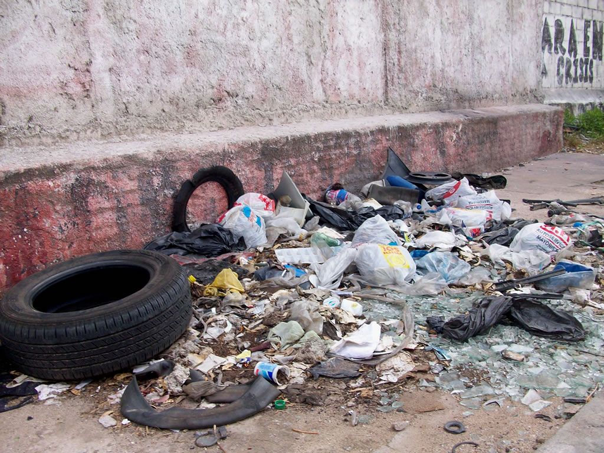
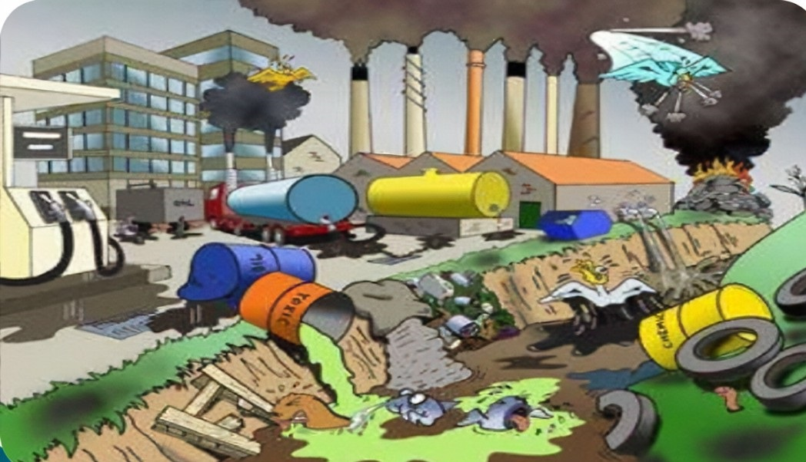

La Contaminación del Suelo
La contaminación del suelo es el proceso de degradación de la calidad de la superficie terrestre.
La intervención humana y la acumulación de sustancias químicas, radioactivas y compuestos tóxicos
son las causas principales y su efecto resulta negativo para la vida vegetal y animal.
El suelo es la capa más superficial de la capa corteza terrestre y está compuesta por materiales
orgánicos (descomposición de plantas y animales) e inorgánicos (fragmentos rocosos).
Esto permite la vida de plantas y animales y hace que el suelo sea productivo y útil para la actividad
agrícola.
La contaminación del suelo genera un cambio negativo en sus características biológicas, químicas y físicas.
Además, compromete su fertilidad, pone en riesgo la vida vegetal y puede generar el desplazamiento de las
especies animales. |
 |
Causas por la contaminación del suelo
Vertido de residuos y basura, tanto domésticos como industriales, de forma ilegal o ineficiente.
Uso intensivo de químicos, como pesticidas, fertilizantes, o combustibles, que se filtran al suelo y lo degradan.
Fugas radioactivas, de tanques, tuberías, o accidentes, que emiten radiación nociva para el suelo y los seres vivos.
Humo de coches e industria, que se deposita en el suelo y altera su composición y fertilidad.
Alcantarillado viejo, que puede romperse y contaminar el suelo con aguas residuales |
 |
Soluciones para la contaminación del suelo
Existen diferentes soluciones que ayudan a evitar o reducir la contaminación del suelo.
Entre las principales acciones está la toma de medidas preventivas, incluso, educar a las personas para que
sean conscientes de la importancia de evitar este tipo de contaminación. Algunas soluciones son:
Aplicar sistemas de reciclaje más eficientes.
Almacenar y usar de forma correcta los productos químicos.
Evitar el almacenamiento de productos químicos al aire libre.
Utilizar sistemas de detección de fugas en tanques que almacenen productos químicos.
Incentivar la utilización de las energías renovables.
Implementar productos orgánicos.
Mejorar los procesos de depuración de las aguas residuales.
Clasificar de forma correcta los desechos.
Evitar la deforestación de bosques y selvas.
Mejorar la planificación de las ciudades, sus transportes y zonas industriales.
Hacer compostajes caseros.
Evitar el uso de pesticidas o fertilizantes en exceso.
Implementar actividades que ayuden a restaurar la capa superficial de los suelos.